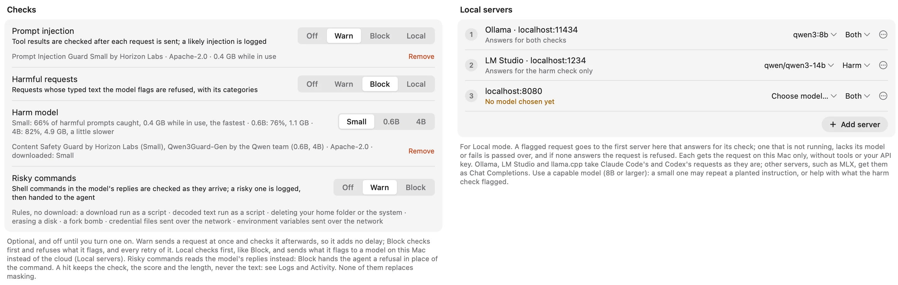
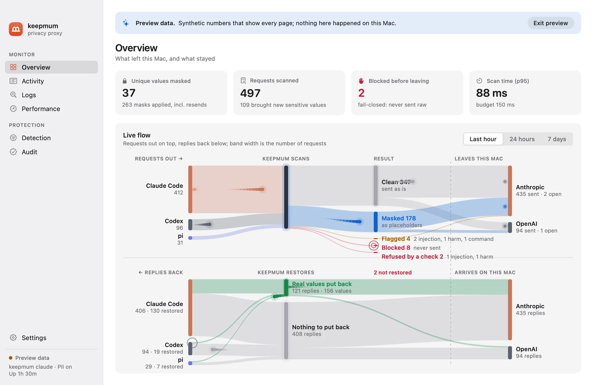
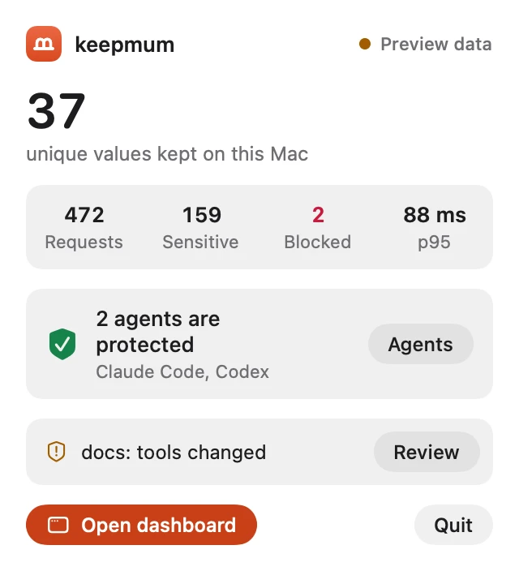

What you wrote, and what leaves.
Secrets are always masked. Names, emails, phone numbers and addresses are masked too when you turn personal data on.
The staging deploy fails. Log in as dana.whitfield@example.com with password Zq8vX2mN4pL7kR9t and check why the key sk_live_51Hx8fQ2eZvKYlo2C7a9Rb is rejected.
The staging deploy fails. Log in as KEEPMUM_EMAIL_a41c07e2 with password KEEPMUM_SECRET_3b91d0aa and check why the key KEEPMUM_SECRET_7f3a9c2e is rejected.
Placeholders in the answer become real values again, so your agent can still log in, edit your .env and run your tests. Tools that reach the network get less: web search and fetch keep the placeholders, an MCP server gets back only what it returned itself, and none of them ever gets a secret.
Four steps, all on your Mac.
Detect
96 rules with entropy and checksum checks, then OpenAI Privacy Filter on your Mac’s GPU for what only context gives away. A last step drops UUIDs, hashes and documented example keys.
Mask
Each value becomes a placeholder made with a key only your Mac has. The same value always gets the same placeholder, so the provider’s prompt cache keeps working.
Restore
Real values go back into streamed text, file edits and shell commands. They live only in memory, and are cleared when keepmum quits.
Fail closed
A request keepmum can’t scan (an unknown endpoint, an unreadable body, a WebSocket) is blocked. It is never sent raw.
Three checks, if you want them.
All off until you turn them on, and all on your Mac. Warn sends the request and logs a hit. Block refuses it. Local, for the first two, sends a flagged request to a model on your Mac instead of the provider, so your agent still gets an answer.
Prompt injection
Checks what tools bring back (web pages, files, shell output, MCP replies) for instructions planted for your agent. On the benchmark it caught every injected document and flagged 3% of ordinary ones.
Harmful requests
Checks what you type, not what tools return. The default model catches 66% of harmful prompts and flags 5% of safe ones, in 8 ms; larger ones catch up to 82%.
Risky commands
Checks the shell commands a reply asks your agent to run: a download piped into a shell, deleting your home folder, erasing a disk, credentials sent over the network. Seven rules, no download.

A menu bar app that shows its work.
Set up in three steps: download the model, start the background service, switch on protection for each agent. Then watch requests go out and replies come back, see what was masked and what a check flagged, choose what gets masked, and check the audit log.


Every session
With protection on, Claude Code goes through keepmum in the terminal, VS Code and the desktop app.
Your rules
Turn off a type, add your own patterns, list exceptions, or leave a project out entirely.
An audit log
Every change that turned protection down, who made it and when, in a log that shows if it was edited.
Measured, not promised.
On synthetic, labeled datasets on an M5 Pro. The method and every result are in the repo.
What keepmum doesn’t do.
It’s a safety layer, not a guarantee. Here is where it stops.
Every limitation, in fullShell commands get real values
A GitHub, Stripe or AWS token stays a placeholder in a command that would send it to another host. A password, or a command built to hide where it sends things, gets past that: pair keepmum with a sandbox that limits the network.
Your local history keeps them too
keepmum protects what leaves your Mac, not what your agent stores on it.
Unusual IDs get masked by mistake
On the hardest fresh tests, 3 to 9 of 15 harmless IDs were flagged. That costs the model some context, never a leak.
Images and PDFs pass unscanned
Only text is checked. The local model is strongest on English.
Two ways in.
The Mac app
Everything included: keepmum, its Python runtime and the model server. Drag it to Applications, open it, and follow Settings › Setup.
Download for MacmacOS 14 or later on Apple silicon. The model needs 1.6 GB of disk and about 1.7 GB of memory while it runs.
The command line
With Python 3.12, uv and the Xcode command line tools.
git clone https://github.com/blueandhack/keepmum.git
cd keepmum && uv tool install --editable .
native/pf-serve/build.sh
keepmum setup
keepmum claude